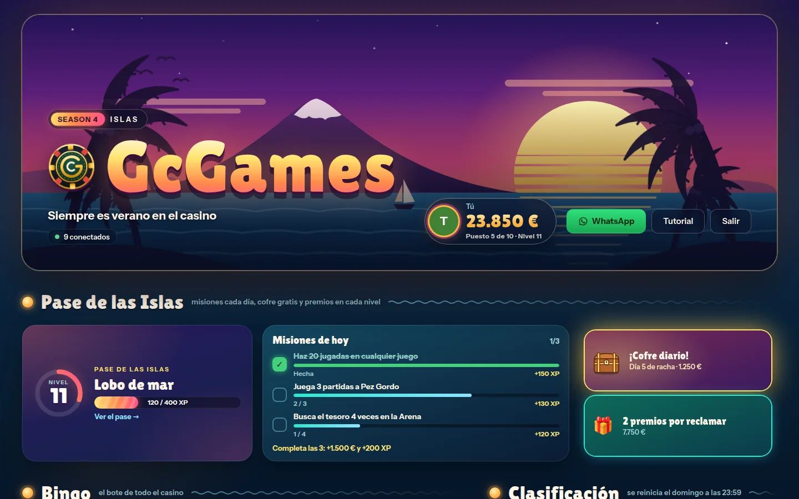

Desarrollo móvil
Android nativo con Kotlin y Jetpack Compose y apps multiplataforma con React Native + Expo: un mismo código para Android, iOS y web.
DAMFlix · MiBalance · TopCode|
Desarrollador frontend y multiplataforma. Construyo interfaces limpias, accesibles y bien estructuradas. Actualmente en 2º de DAM, con prácticas en el Ayuntamiento de Agüimes y proyectos propios publicados.
Desarrollador de Las Palmas de Gran Canaria, en 2º del Grado Superior en DAM. Me enfoco en crear interfaces limpias y funcionales — código que se entiende tanto por el usuario como por quien lo mantiene.
Realicé prácticas en el Ayuntamiento de Agüimes en dos ocasiones: en 2025, durante 1º de DAM, desarrollé la web de gestión y préstamo de expedientes del archivo municipal, y en 2024, durante el Grado Medio en SMR, la intranet municipal con HTML, CSS, JavaScript y PHP, además de dar soporte IT. También he construido proyectos propios desde cero y los he publicado: web, app móvil, API y escritorio. Tengo visión full-stack, lo que me permite colaborar con cualquier parte del equipo.
Busco un equipo donde aportar desde el primer día y seguir creciendo.

Plataforma de juegos multijugador en tiempo real: mesas en vivo, rondas simultáneas, juegos en solitario, colección de cartas y una economía semanal. Moneda ficticia y arquitectura serverless sobre Cloudflare y Supabase.
Frontend
Móvil
Backend
Escritorio
Base de datos & Cloud
Herramientas
Este curso he pasado de la web clásica a construir productos completos en varias plataformas. Esto es lo que he aprendido y dónde lo he aplicado.
Android nativo con Kotlin y Jetpack Compose y apps multiplataforma con React Native + Expo: un mismo código para Android, iOS y web.
DAMFlix · MiBalance · TopCodeComponentes, estado, rutas y tipado estricto con Vite y Tailwind. Del JavaScript de la intranet a aplicaciones mantenibles.
TopCode · GcGames · Calculadora-ReactSupabase (autenticación y PostgreSQL), Cloudflare Workers/Pages y Vercel para desplegar sin gestionar servidores propios.
GcGames · TopCode · MiBalancePOO y patrón MVC en Java, y una API REST con Spring Security (API Key), PostgreSQL, Docker multi-stage y despliegue en Render.
Rally Canarias · Sistema de Biblioteca MVCC# y Windows Forms con detección de cara (OpenCvSharp), seguimiento de manos (ONNX Runtime) y sonido (NAudio).
FaceSageMesas en vivo, rondas simultáneas y chat en tiempo real; aplicaciones instalables que funcionan como una app nativa.
GcGames · TopCode¿Tienes una oportunidad o proyecto? Escríbeme y te respondo lo antes posible.